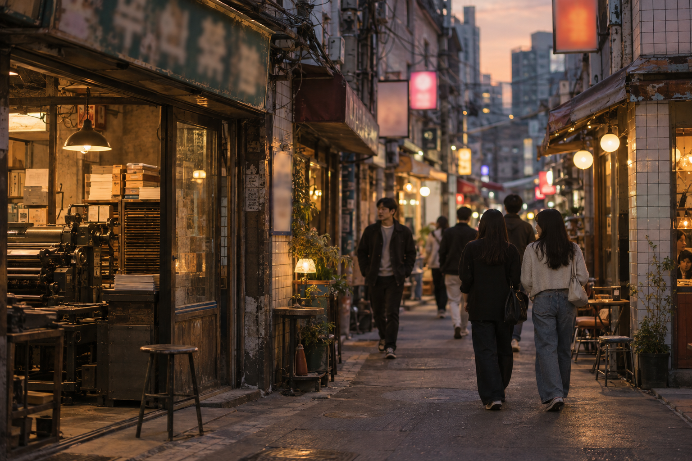
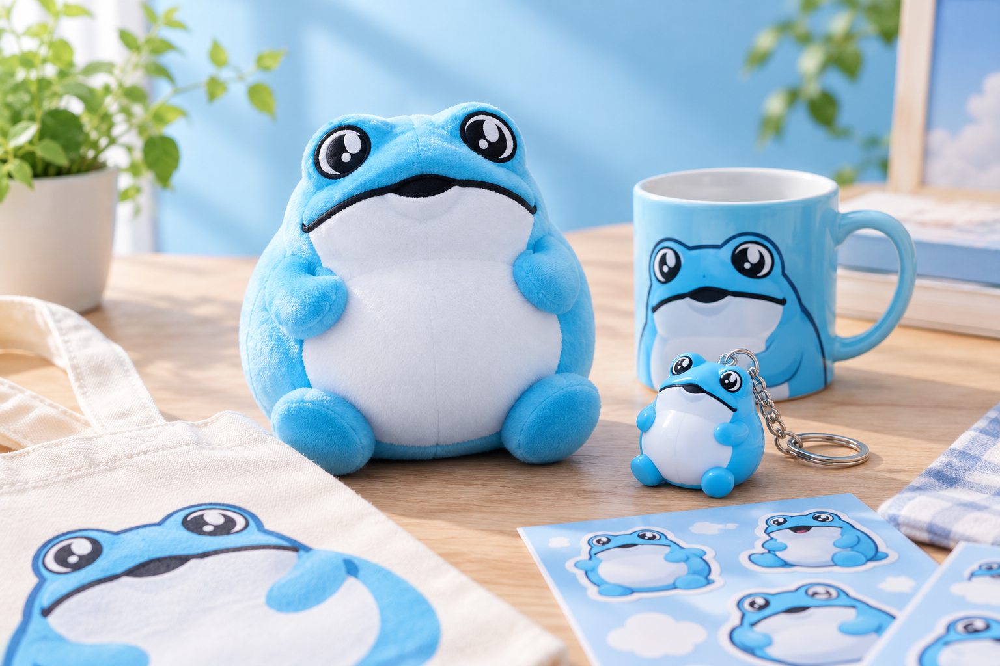

Why Retro Keeps Coming Back, and How JINRO Toad Made Its Return
Retro never really goes away. Here’s why the classics keep coming back, and how JINRO Toad made its return for a new generation.
Grand Theft Auto VI (GTA 6) launched on November 19, and with it, Vice City is back.
The original Vice City was set in 1986. The new one takes place in the present day, with smartphones and social media in the picture, yet the scenery in the trailers still reads as pure ’80s retro: pink sunsets, neon signs and Art Deco buildings.
The era has changed, but the retro feel has stayed. And it’s not just games.

1. Why Retro Still Feels New
Retro is no longer just a backdrop for a certain period. It has become a visual language people recognize right away.
Today’s retro style shows up in fashion, design and food, and it works the same way everywhere. Instead of copying the past as a whole, it keeps a few signature details and remixes the rest for today.
In Seoul, this mix even has its own name: newtro, a blend of “new” and “retro.” Old printing alleys turn into cafes, and vintage signs sit right next to brand-new menus.

2. JINRO Is Back: How a Classic Bottle Brought Toad Back
In Korea, one brand won over a new generation by bringing back its classic look: JINRO. In April 2019, JINRO relaunched its classic soju as JINRO Is Back.
It kept the symbols people remembered: the sky-blue bottle, the classic label design and the toad that has long represented JINRO.
But it updated the look. The realistic toad from the old label became a round, friendly blue character, now known as JINRO Toad.
Fans responded quickly. JINRO Is Back sold 100 million bottles within seven months of its launch.

3. The Toad Shop: JINRO Toad Steps Off the Label
JINRO Toad didn’t stay on the bottle for long. Fans kept asking where they could buy the toad goods that had only been made for promotions.
So in August 2020, JINRO opened Dukkeop Sanghoe, or the Toad Shop, in Seoul’s Seongsu-dong. It was the first character pop-up store from a Korean liquor brand, and it sold goods instead of drinks, like a stationery shop for grown-ups.
The pop-up later opened in other cities, with local editions. Collaborations followed too, from fashion pieces to toad-themed desserts and snacks at Korean convenience stores.
Today, one look at a blue toad is enough to bring JINRO to mind.

4. Why Classics Keep Coming Back
A neon city in a video game and a toad on a soju bottle couldn’t be more different. But the way they stay loved is surprisingly similar.
Neither one simply repeats the past. Both keep the symbols people recognize, then present them in a way that feels current.
That’s why JINRO Toad keeps showing up with a new look, and why a new generation keeps falling for it.
Next time you spot a blue toad, you’ll know it’s been decades in the making.
To discover more Korean food stories and JINRO pairings, visit JINRO Global’s official Instagram, Facebook, and YouTube.
This article is intended for readers of legal drinking age. Please enjoy JINRO responsibly and in moderation, and never drink and drive.